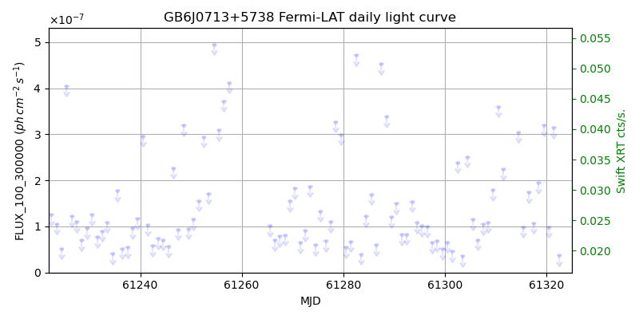
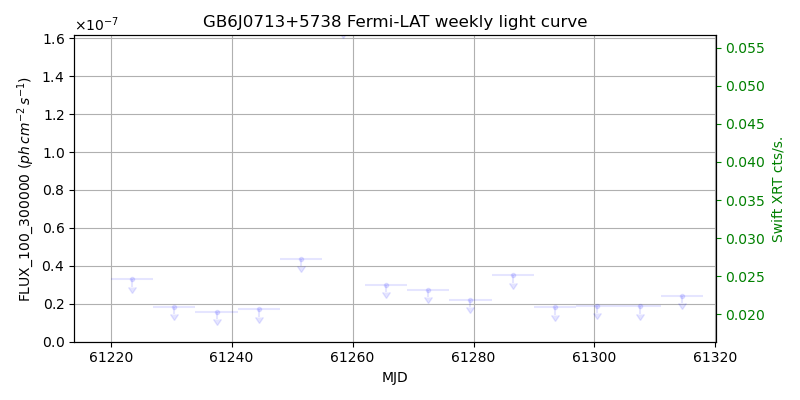
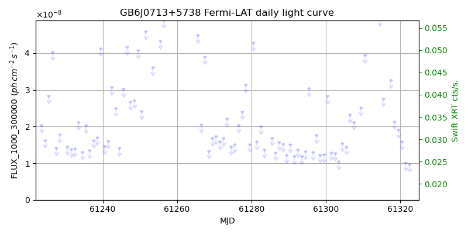
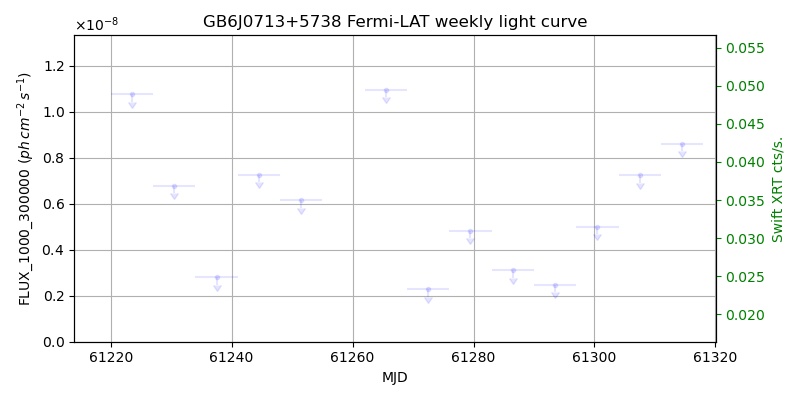

LAT Lightcurve site: https://fermi.gsfc.nasa.gov/ssc/data/access/lat/msl_lc/source/GB6_J0713p5738
Swift site: https://www.swift.psu.edu/monitoring/source.php?source=GB6J0713+5738
NED: Query
Time of last update of this page: UT: 2026-10-10 15:18 (MJD: 61323.638)
| Property | Value |
|---|---|
| R.A. | 7:13:04.56 |
| Dec. | 57:38:09.6 |
| z | 0.000 |
| 3FGL SpectrumType | |
| 3FGL PL Index | -1.00 |
| 3FGL Flux_100_300000 | -1.00e+00 |
| 3FGL Flux_1000_300000 | -1.00e+00 |
| 3FGL Flux >200 GeV | -1.00e+00 |
| 3FGL Extrap. Crab >200 GeV | -1.00 |
| 3FGL Flux After EBL Absorption >200GeV | -1.00e+00 |
| 3FGL EBL Crab Fraction >200GeV | -1.00 |

| MJD | dMJD | Flux | dFlux | Frac3FGL | FracCrab>200GeV | EBLFracCrab>200GeV |
|---|---|---|---|---|---|---|
| 61318.50 | 0.50 | 1.94e-07 | 0.00e+00 | 0.00 | 0.00 | -0.00 |
| 61319.50 | 0.50 | 3.19e-07 | 0.00e+00 | 0.00 | 0.00 | -0.00 |
| 61320.50 | 0.50 | 9.86e-08 | 0.00e+00 | 0.00 | 0.00 | -0.00 |
| 61321.50 | 0.50 | 3.14e-07 | 0.00e+00 | 0.00 | 0.00 | -0.00 |
| 61322.50 | 0.50 | 3.73e-08 | 0.00e+00 | 0.00 | 0.00 | -0.00 |

| MJD | dMJD | Flux | dFlux | Frac3FGL | FracCrab>200GeV | EBLFracCrab>200GeV |
|---|---|---|---|---|---|---|
| 61286.50 | 3.50 | 3.53e-08 | 0.00e+00 | 0.00 | 0.00 | -0.00 |
| 61293.50 | 3.50 | 1.82e-08 | 0.00e+00 | 0.00 | 0.00 | -0.00 |
| 61300.50 | 3.50 | 1.90e-08 | 0.00e+00 | 0.00 | 0.00 | -0.00 |
| 61307.50 | 3.50 | 1.88e-08 | 0.00e+00 | 0.00 | 0.00 | -0.00 |
| 61314.50 | 3.50 | 2.43e-08 | 0.00e+00 | 0.00 | 0.00 | -0.00 |

| MJD | dMJD | Flux | dFlux | Frac3FGL | FracCrab>200GeV | EBLFracCrab>200GeV |
|---|---|---|---|---|---|---|
| 61318.50 | 0.50 | 2.14e-08 | 0.00e+00 | 0.00 | 0.00 | -0.00 |
| 61319.50 | 0.50 | 1.91e-08 | 0.00e+00 | 0.00 | 0.00 | -0.00 |
| 61320.50 | 0.50 | 1.58e-08 | 0.00e+00 | 0.00 | 0.00 | -0.00 |
| 61321.50 | 0.50 | 1.02e-08 | 0.00e+00 | 0.00 | 0.00 | -0.00 |
| 61322.50 | 0.50 | 9.75e-09 | 0.00e+00 | 0.00 | 0.00 | -0.00 |

| MJD | dMJD | Flux | dFlux | Frac3FGL | FracCrab>200GeV | EBLFracCrab>200GeV |
|---|---|---|---|---|---|---|
| 61286.50 | 3.50 | 3.10e-09 | 0.00e+00 | 0.00 | 0.00 | -0.00 |
| 61293.50 | 3.50 | 2.48e-09 | 0.00e+00 | 0.00 | 0.00 | -0.00 |
| 61300.50 | 3.50 | 5.00e-09 | 0.00e+00 | 0.00 | 0.00 | -0.00 |
| 61307.50 | 3.50 | 7.24e-09 | 0.00e+00 | 0.00 | 0.00 | -0.00 |
| 61314.50 | 3.50 | 8.61e-09 | 0.00e+00 | 0.00 | 0.00 | -0.00 |
--------------------------------------------------------- Using user-supplied coords: 7:13:04.56 57:38:09.6 2000 --------------------------------------------------------- FLWO UT night of: 2026-10-11 Local Sid. @ Midnight: 00:55 Sunset (-15.0) (local, UT): 19:04 02:04 Sunrise (-15.0) (local, UT): 05:18 12:18 Moonrise (local, UT): Moonset (local, UT): Moon phase: 0.01 --------------------------------------------------------- AzTime LSID UT Obj_el Obj_az Mn_el Mn_az Sep. --------------------------------------------------------- 19:04 19:58 02:04 0.2 5.8 -16.1 264.2 101.1 19:34 20:29 02:34 1.0 9.8 -22.3 267.8 101.3 20:04 20:59 03:04 2.2 13.6 -28.5 271.5 101.5 20:34 21:29 03:34 3.8 17.2 -34.7 275.4 101.8 21:04 21:59 04:04 5.8 20.7 -40.8 279.7 102.0 21:34 22:29 04:34 8.2 23.9 -46.8 284.6 102.3 22:04 22:59 05:04 10.9 26.9 -52.7 290.5 102.5 22:34 23:29 05:34 14.0 29.6 -58.4 297.7 102.8 23:04 23:59 06:04 17.2 32.1 -63.6 307.3 103.0 23:34 00:29 06:34 20.7 34.2 -68.1 320.3 103.3 00:04 00:59 07:04 24.4 35.9 -71.3 338.2 103.6 00:34 01:29 07:34 28.2 37.4 -72.6 0.4 103.9 01:04 01:59 08:04 32.1 38.4 -71.5 22.7 104.1 01:34 02:30 08:34 36.1 38.9 -68.3 40.8 104.4 02:04 03:00 09:04 40.2 39.0 -63.9 54.1 104.7 02:34 03:30 09:34 44.2 38.4 -58.7 63.8 105.0 03:04 04:00 10:04 48.1 37.1 -53.1 71.2 105.3 03:34 04:30 10:34 51.9 34.9 -47.3 77.2 105.6 04:04 05:00 11:04 55.4 31.6 -41.4 82.2 105.8 04:34 05:30 11:34 58.5 26.9 -35.3 86.6 106.1 05:04 06:00 12:04 61.1 20.8 -29.2 90.6 106.4 05:18 06:14 12:18 62.1 17.6 -26.5 92.4 106.5 --------------------------------------------------------- Dark hours >55 deg.: 1.28 srcstart (UT): 2026-10-11 11:00 srcend (UT): 2026-10-11 12:17